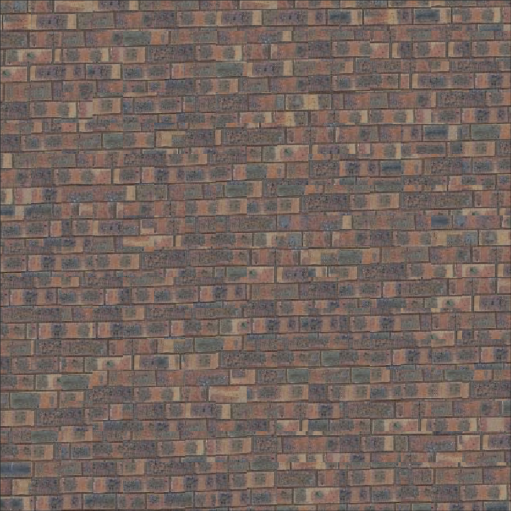
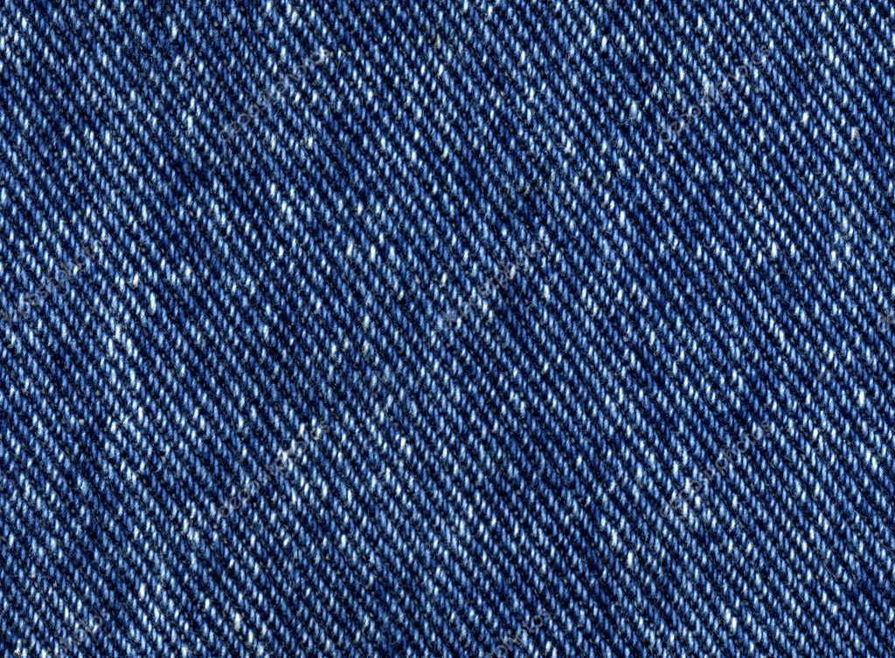
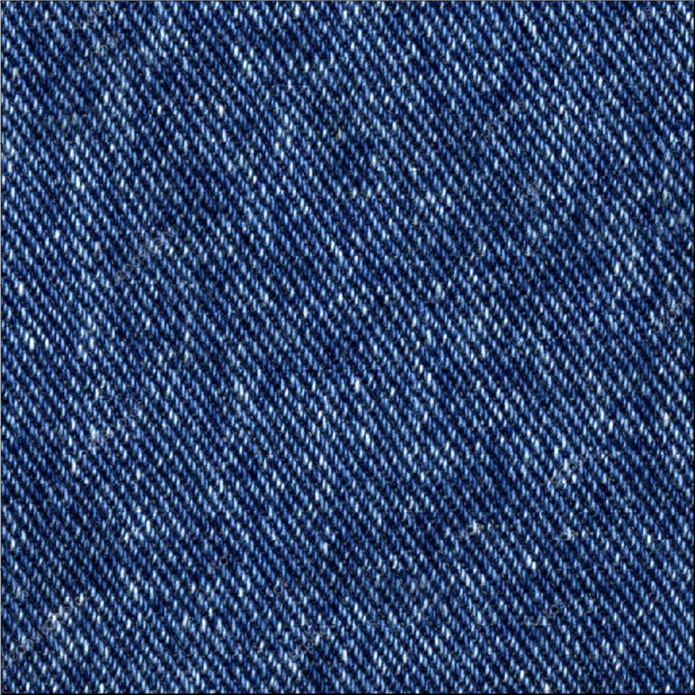
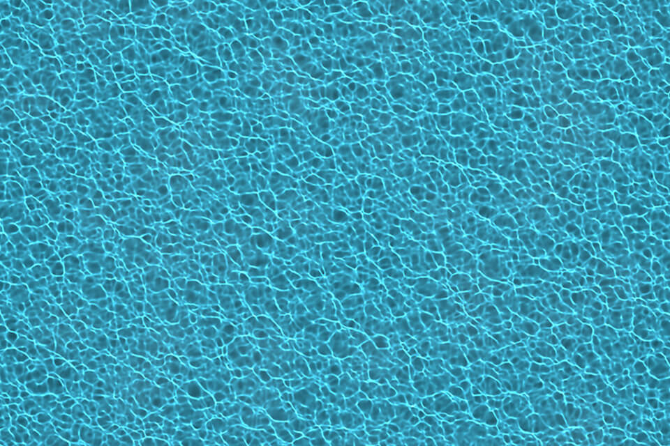
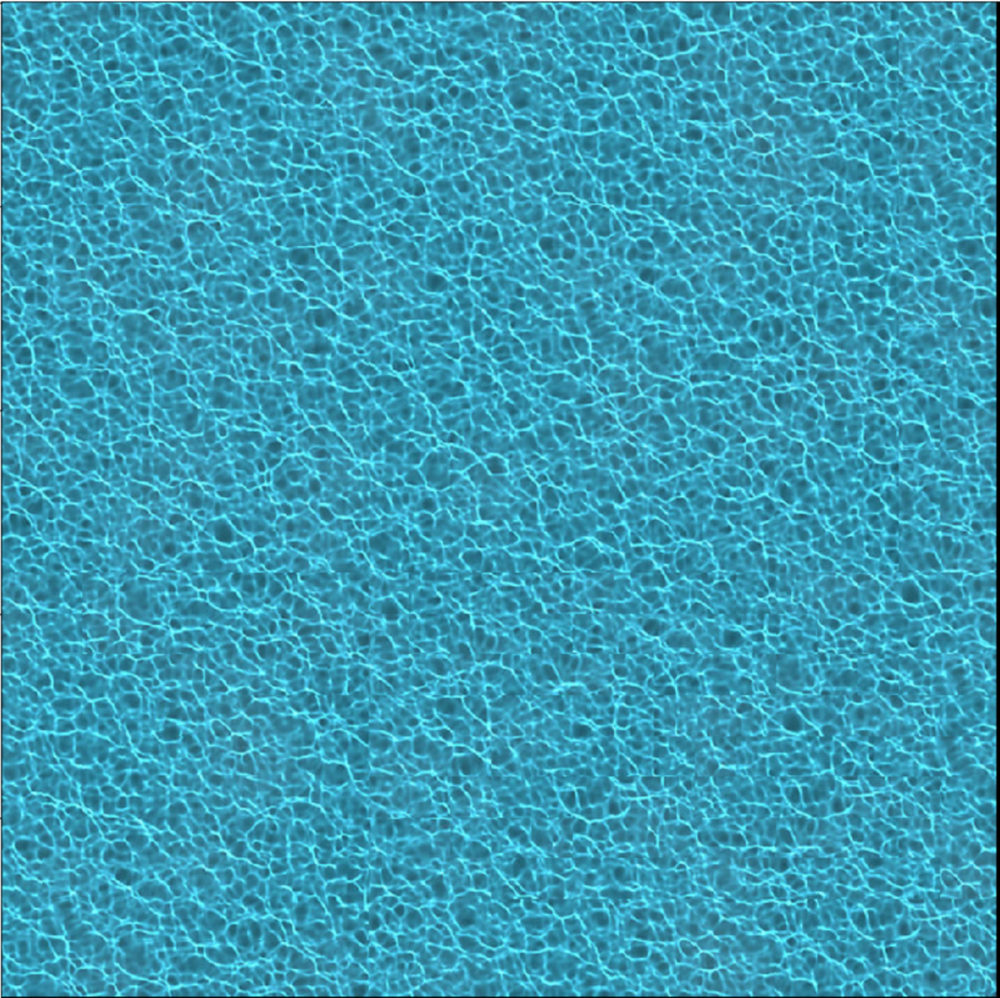

PROJECTS


Ray Tracer (C++)
Ray Tracer built in C++ to further develop my understanding of core computer graphics principles. I learned how to build this project by reading Peter Shirley’s book, Ray Tracing in One Weekend. It features global illumination lighting of diffuse, metallic, and dielectric materials and camera controls for basic cinematography.
Core Features: Materials and Simple Cinematography System
This initial render has three spheres of the same size, an orange diffuse sphere, a metallic sphere with little roughness, and a hollow glass sphere.

By placing the red sphere behind the hollow glass sphere you can clearly see the refraction and reflection taking place using Schlick's approximation and Fresnel equations.

This next image demonstrates how the roughness and color of metal can be changed to represent different metallic materials. In this example the roughness constant was increased and the RGB color was modified to represent a rougher gold material.

The camera can move in the 3D space as well, allowing for new angles of the scene.

At any position the vertical field of view can be changed to zoom in or out on the subject.

Lastly, the size of the aperture can be increased or decreased for simulating depth of field. This example increases the aperture for a higher depth of field effect.

I had a ton of fun creating this project! I am excited to learn more about building render engines and am currently starting Peter Shirley’s second Ray Tracing book. Checkout the GitHub repository for this project.
GitHub Code Back to Projects2D Pose Estimation Project (Python)
Pose estimation project implementing a convolution neural network constructed from the MPII human pose dataset to estimate human joints based off of video footage. I developed this program to gain a deeper understanding of how computer vision and machine learning can be levaraged to identify human poses to create a mobile motion capture pipeline for film, animation, and immersive development.

Process and Implementation
The program accepts a video input and uses the pose estimation model to predict joint locations. The prototxt and caffemodel files used for the neural network are very large, and therefore kept locally. After predicting joint locations, the program goes through two key processes to improve accuracy. The first improvement is joint swapping. Often times the model incorrectly predicts corresponding joints, swapping the right and left knee, elbow, etc. In the initial analysis of the video, after joints have been predicted, the function checks to see first if that joint has a corresponding joint (left knee corresponds with right knee), if it does then it checks if they are horizontally mismatched. If both these conditions are satisfied, typically a swap is in order and the joints are swapped. The second improvement is smoothing. The pose-estimation data is accurate, yet very jittery. Human's naturally move with more grace. To accomplish capturing smoother motion data, I used a Savgol smoothing filter to remove noise and jitter.
Future Improvements
To leverage computer vision pose estimation for motion capture, two key features must be added to this project. The first would be 3D reconstruction. Using a mathematical method 3D pose data must be reconstructed to transfer over to motion capture/animation data. With the inclusion of depth sensors on future mobile devices this process may be easier in the future, but for the time being mathematical reconstruction can be explored. From scavenging the web, this paper explained the process of 3D reconstruction of 2D points best for me. Link: Reconstructing_The_Missing_Dimension_From_2D_To_3D_Human_Pose_Estimation.
I am currently working on implementing its explanation into this project. The second key improvement would be writing 3D reconstructed pose data to FBX animation files, to complete the mobile performance capture pipeline. My plan after 3D reconstruction, is to use the FBX SDK provided by Autodesk to write the data to animation files. This process would also include tweaking the data to correctly fit a characters animation rig.
Machine Learning Classification (Python)
Machine Learning classification model implementing Random Forest algorithm, built in Python from scratch. Tested using the IRIS flower dataset. I developed this project to enhance my understanding of ML/AI technologies. Model generates decision trees, and saves them into a Random Forest Object. The object is tested for accuracy and scrapped if does not meet the minimum accuracy requirement parameter. Model is trained off of 60% of the datset, and tested using the other 40% it has never been exposed to.
Example 1: ML Model with 95.08% Accuracy
The first plot represents the actual species of certain flowers in the dataset, while the second is the Machine Learning predicted species. The model predicted species correctly 58 times and incorrectly 3 times in this example.

Example 2: ML Model with 96.72% Accuracy
The model predicted species correctly 59 times and incorrectly 2 times in this example.

Virtual Production Cinematic (Unreal Engine)
Below is an example cinematic from my in-progress student short film. Currently, I am developing custom C++/blueprints tools, HLSL shaders, and practicing lighting to build a specific style for my student short film. The environment is a test environment from the Unreal Engine Marketplace. Lighting, post-processing effects, and cinemetography were done by me. I am extremely passionate about building custom tools for filmmaking workflows and leveraging virtual production toolsets to develop unique cinematic styles. I would love to talk more about the techincal and creative details behind this work in progress project!
Tools Used
Unreal Engine, Sequencer, C++, and Apple ARKit
Previous Work (Fall 2019): Short cinematic created in Unreal Engine to learn about using sequencer and virtual production toolsets.
Back to ProjectsShaders (GLSL)
I created two shaders in GLSL to learn more about shading languages in computer graphics, and their applications. The first shader is of a steel ball with a dynamic background and rotation light source. The second shader implements the Blinn Phong shading model.
Steel Shader
The steel shader has a metallic reflective surface, and dynamic background. The light source orbits the steel sphere.
Blinn Phong Shader
The Blinn Phong shader represents a classic computer graphics shading method, with a moving light source in front of the sphere.
Currently I am learning more about shader programming and building my skillset in GLSL/HLSL.
GitHub Code Back to ProjectsProcedural Generation (UE4 C++)
Procedural generation algorithm built in Unreal Engine C++ to procedurally populate landscapes with certain meshes. The program uses inputs such as a meshes and landscape dimensions to procedurally populate the landscape with those meshes. This algorithm came in handy for building the environment of my virtual production project.
Empty Landscape
Procedurally Generated Emmisive Cubes in Landscape
The emmisive cube was selected as the mesh for this instance of the program. The program placed a number of emmisive cubes throughout the landscape.

Procedurally Generated Rocky Terrain in Landscape
Procedurally generating terrain is a very useful application for this program in real-time environments. The rocky terrain mesh was procedurally placed in the landscape.

Shotgun-Photoshop Plugin (Python)
Separate layers plugin created for Photoshop-Shotgun integration. Project for my internship with ZERO VFX. Plugin created to streamline matte-painting artist workflow. Integration with tk-config files required within artist schema. Validates and publishes the layers of a .psd file to Shotgun.
Plugin Integrated with Shotgun Publish Button
The plugin integrates fully with the Shotgun Publish Button. This allows artists to publish all their work to Shotgun along with the separate layers generated, ensuring a streamlined workflow.

Plugin Integrated with Shotgun File Validation
The plugin integrates with Shotgun's file validation system, allowing artists to know when errors may occur in their workflow.

Texture Synthesis (Python)
Texture synthesis implementation based on the 2001 SIGGRAPH paper titled "Image Quilting for Texture Synthesis and Transfer". Project for my Computational Photography class (CS 445). Implemented seam finding (minimum error boundary cut) to mathematically determine the best place to cut and place a new patch for texture synthesis. Code for this project not provided according to school policy to prevent academic dishonesty.
Example 1: Brick Texture
Original Sample

Synthesized Brick Texture
Example 2: Denim Texture
Original Sample
Synthesized Denim Texture
Example 3: Water Texture
Original Sample
Synthesized Water Texture
